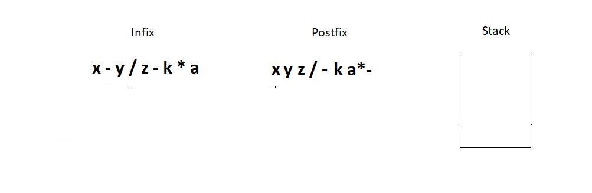

These are the notations to write an expression.
Infix: This is the method we have all been studying and applying for all our academic life. Here the operator comes in between two operands. And we say, two is added to three. For eg: 2 + 3, a * b, 6 / 3 etc.
< operand 1 >< operator >< operand 2 >
Prefix: This method might seem new to you, but we have vocally used them a lot as well. Here the operator comes before the two operands. And we say, Add two and three. For e.g.: + 6 8, * x y, - 3 2 etc.
< operator >< operand 1 >< operand 2 >&
Postfix: This is the method that might as well seem new to you, but we have used even this in our communication. Here the operator comes after the two operands. And we say, Two and three are added. For e.g.: 5 7 +, a b *, 12
6 / etc.
< operand 1 >< operand 2 >< operator >
To understand the interchangeability of these terms, please refer to the table below.
Infix
Prefix
Postfix
a * b
* a b
a b *
a - b
- a b
a b -
As human we use rule called BODMAS where we have operators’ precedence in this order; brackets, of, division, multiplication, addition, subtraction. But what would you do when you get to evaluate a 1000 character long-expression,
or even longer one? You will try to automate the process. But there is one issue. Computers don’t follow BODMAS; rather, they have their own operator precedence. And this is where we need these postfix and prefix notations. In programming,
we use postfix notations more often, likewise, following the precedence order of machines.
Consider the expression a* ( b + c ) * d; since computers go left to right while evaluating an expression, we’ll convert this infix expression to its postfix form.
Its postfix form is, a b c + * d *.
We have successfully reached what we wanted the machine to do. Now the kick is in converting infixes to postfixes and prefixes.
Converting infix to prefix:
Consider the expression, x - y * z
1. Parentheses the expression. The infix expression must be parenthesized by following the operator precedence and associativity before converting it into a prefix expression. Our expression now becomes ( x - ( y * z ) ).
2. Reach out to the innermost parentheses. And convert them into prefix first, i.e. ( x - ( y * z ) ) changes to ( x - [ * y z ] ).
3. Similarly, keep converting one by one, from the innermost to the outer parentheses. ( x - [ * y z ] ) → [ - x * y z ].
Converting infix to postfix:
1. Parentheses the expression as we did previously. Our expression now becomes ( x - ( y * z ) ).
2. Reach out to the innermost parentheses. And convert them into postfix first, i.e. ( x - ( y * z ) ) changes to ( x - [ y z * ] ).
3. Similarly, keep converting one by one, from the innermost to the outer parentheses. ( x - [ y z * ] ) → [ x y z * - ].
4. And we are done.
Similarly the expression p - q - r / a, follows the following conversions to become a prefix expression:
p - q - r / a → ( ( p - q ) - ( r / a ) ) → ( [ - p q ] - [ / r a ] ) → - - p q / r a
Quick Quiz: Convert the above infix expression into its postfix form.
Note: You cannot change the expression given to you. For eg. ( p - q ) * ( m - n ) cannot be changed to something like ( p - ( q * m ) - n ).
step computer follows:
1. We will start traversing from the left.
2. First, we got the letter ‘x’. We just pushed it into the postfix string. Then we got the subtraction symbol ‘-’, and we push it into the stack since the stack is empty.
3. Similarly, we push the division operator in the stack since the topmost operator has a precedence number 1, and the division has 2.
4. The next operator we encounter is again a subtraction. Since the topmost operator in the stack has an operator precedence number 2, we would pop elements out from the stack until we can push the current operator. This leads to removing
both the present operators in the stack since they are both greater or equal in precedence. Don’t forget to concatenate the popped operators to the postfix expression.
5. Next, we have a multiplication operator whose precedence number is 2 relative to the topmost operator in the stack. Hence we simply push it in the stack.
6. And then we get to the EOE and still have two elements inside the stack. So, just pop them one by one, and concatenate them to the postfix. And this is when we succeed in converting the infix to the postfix expression.

Follow every step meticulously, and you will find it very easy to master this. You can see if the answer we found at the end is correct manually. x - y / z - k * a → (( x - ( y / z )) - ( k * a )) → (( x - [ y z / ]) - [ k a *
] ) → [ x y z / - ] - [ k a * ] → x y z / - k a * - And it is indeed a correct conversion
Understanding the program for infix to postfix conversion:
1. First of all, create a character pointer function infixToPostfix since the function has to return a character array. And now pass into this function the given expression, which is also a character pointer.
2. Define a struct stack pointer variable sp. And give it the required memory in the heap. Create the instance. It’s safe to assume that a struct stack element and all its basic operations, push, pop, etc., have already been defined.
You better copy everything from the stack tutorial.
3. Create a character array/pointer postfix, and assign it sufficient memory to hold all the characters of the infix expression in the heap.
4. Create two counters, one to traverse through the infix and another to traverse and insert in the postfix. Refer to the illustration below, which describes the initial conditions.
5. Run a while loop until we reach the EOE of the infix. And inside that loop, check if the current index holds an operator, and if it’s not, add that character into the postfix and increment both the counters by 1. And if it does
hold an operator, call another function that would check if the precedence of the stackTop is less than the precedence of the current operator. If yes, push it inside the stack. Else, pop the stackTop, and add it back into the postfix.
Increment j by 1.
char* infixToPostfix(char* infix){
struct stack * sp = (struct stack *) malloc(sizeof(struct stack));
sp->size = 10;
sp->top = -1;
sp->arr = (char *) malloc(sp->size * sizeof(char));
char * postfix = (char *) malloc((strlen(infix)+1) * sizeof(char));
int i=0; // Track infix traversal
int j = 0; // Track postfix addition
while (infix[i]!='\0')
{
if(!isOperator(infix[i])){
postfix[j] = infix[i];
j++;
i++;
}
else{
if(precedence(infix[i])> precedence(stackTop(sp))){
push(sp, infix[i]);
i++;
}
else{
postfix[j] = pop(sp);
j++;
}
}
}
while (!isEmpty(sp))
{
postfix[j] = pop(sp);
j++;
}
postfix[j] = '\0';
return postfix;
}
Code Snippet 1: Creating the function infixToPostfix
6. It’s now time to create the two functions to make this conversion possible. isOperator & precedence which checks if a character is an operator and compares the precedence of two operators respectively.
7. Create an integer function isOperator which takes a character as its parameter and returns 2, if it's an operator, and 0 otherwise.
int isOperator(char ch){
if(ch=='+' || ch=='-' ||ch=='*' || ch=='/')
return 1;
else
return 0;
}
Code Snippet 2: Creating the function isOperator
8. Create another integer function precedence, which takes a character as its parameter, and returns its relative precedence. It returns 3 if it’s a ‘/’ or a ‘*’. And 2 if it's a ‘+’ or a ‘-’.
9. If we are still left with any element in the stack at the end, pop them all and add them to the postfix.
int precedence(char ch){
if(ch == '*' || ch=='/')
return 3;
else if(ch == '+' || ch=='-')
return 2;
else
return 0;
}
Code Snippet 3: Creating the function precedence
And we have successfully finished writing the codes.
Here is the whole source code:
#include <stdio.h>
#include <stdlib.h>
#include <string.h>
struct stack
{
int size;
int top;
char *arr;
};
int stackTop(struct stack* sp){
return sp->arr[sp->top];
}
int isEmpty(struct stack *ptr)
{
if (ptr->top == -1)
{
return 1;
}
else
{
return 0;
}
}
int isFull(struct stack *ptr)
{
if (ptr->top == ptr->size - 1)
{
return 1;
}
else
{
return 0;
}
}
void push(struct stack* ptr, char val){
if(isFull(ptr)){
printf("Stack Overflow! Cannot push %d to the stack\n", val);
}
else{
ptr->top++;
ptr->arr[ptr->top] = val;
}
}
char pop(struct stack* ptr){
if(isEmpty(ptr)){
printf("Stack Underflow! Cannot pop from the stack\n");
return -1;
}
else{
char val = ptr->arr[ptr->top];
ptr->top--;
return val;
}
}
int precedence(char ch){
if(ch == '*' || ch=='/')
return 3;
else if(ch == '+' || ch=='-')
return 2;
else
return 0;
}
int isOperator(char ch){
if(ch=='+' || ch=='-' ||ch=='*' || ch=='/')
return 1;
else
return 0;
}
char* infixToPostfix(char* infix){
struct stack * sp = (struct stack *) malloc(sizeof(struct stack));
sp->size = 10;
sp->top = -1;
sp->arr = (char *) malloc(sp->size * sizeof(char));
char * postfix = (char *) malloc((strlen(infix)+1) * sizeof(char));
int i=0; // Track infix traversal
int j = 0; // Track postfix addition
while (infix[i]!='\0')
{
if(!isOperator(infix[i])){
postfix[j] = infix[i];
j++;
i++;
}
else{
if(precedence(infix[i])> precedence(stackTop(sp))){
push(sp, infix[i]);
i++;
}
else{
postfix[j] = pop(sp);
j++;
}
}
}
while (!isEmpty(sp))
{
postfix[j] = pop(sp);
j++;
}
postfix[j] = '\0';
return postfix;
}
int main()
{
char * infix = "x-y/z-k*d";
printf("postfix is %s", infixToPostfix(infix));
return 0;
}